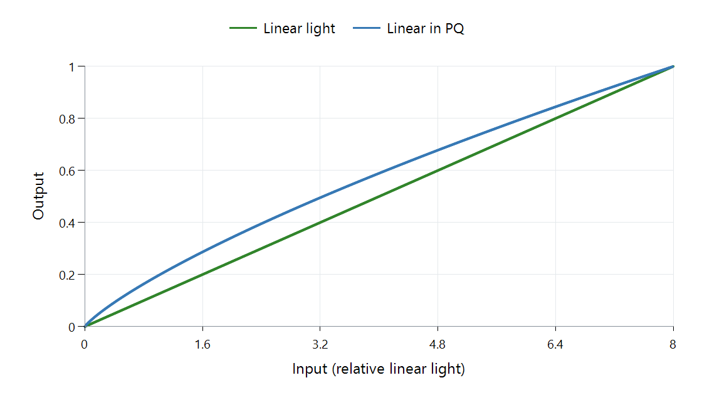

Tone Mapping Curve: Linear
Divide each linear-light input by the peak ratio, and the source range fits proportionally. For a ratio of eight, T(x) = x/8:
| Input | Output |
|---|---|
| 0.8 | 0.1 |
| 1 | 0.125 |
| 4 | 0.5 |
| 8 | 1 |
The output preserves the ratios of these light values. It also darkens every lower value by the same factor, which can spend too little brightness on ordinary objects when the source has only a small very bright highlight.

Peak ratio 8:1. Green scales linear light; blue follows libplacebo's PQ-space stretch with output white 203 nits. Both axes show relative linear light; gain is one and black is zero.
Why the blue proportional mapping bends
PQ coordinates are nonlinear with respect to light. The blue operation proportionally changes those coordinates, then the figure converts its result back to linear light. The operation is linear in its selected representation, while its plotted light relationship is curved.
This distinction occurs in software: FFmpeg's CPU linear mapper operates on linear-light samples; libplacebo distinguishes its PQ-space linear option from linearlight. The selected space is part of the method, not a minor naming detail.
A useful Emby comparison therefore starts with the implementation, source range, target, and working space. For the green example, input 4 and input 8 stay distinct at 0.5 and one. Clipping would merge both at one. That retained separation is what proportional fitting buys, and the lower-value arithmetic shows what it costs.
See Also
- What a Tone-Mapping Curve Controls
- Tone Mapping Curve: Clip
- Perceptual Quantizer (PQ): SMPTE ST 2084